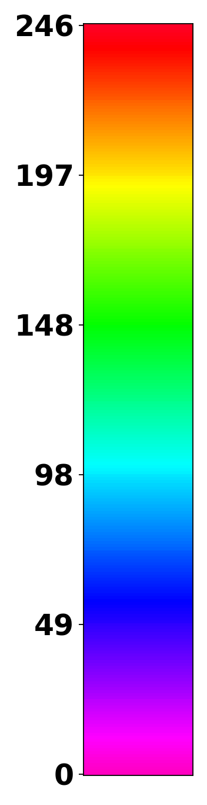

<!doctype html>
<html lang="en">
<head>
  <meta charset="utf-8" />
  <meta name="viewport" content="width=device-width, initial-scale=1" />
  <title>Whole Map Viewer</title>
  <link rel="stylesheet" href="../../src/style.css?v=whole-v11" />
  <script type="importmap">{"imports":{"three":"https://unpkg.com/three@0.166.1/build/three.module.js","three/addons/":"https://unpkg.com/three@0.166.1/examples/jsm/"}}</script>
</head>
<body data-manifest="./manifest.json">
  <aside id="panel">
    <a class="backLink" href="../../index.html">Back to whole map</a>
    <h1 id="pageTitle">Whole Map Viewer</h1>
    <p id="pageHint" class="hint"></p>
    <div id="sceneNotes" class="note"></div>
    <div id="status">Loading manifest...</div>
    <div class="section"><div id="groupSwitch" class="groupSwitch" aria-label="Map group"></div></div>
    <div class="section"><button id="showAll">Current on</button><button id="hideAll">Current off</button><button id="resetCamera">Reset camera</button></div>
    <div class="section"><label>Point size <input id="pointSize" type="range" min="0.0002" max="0.03" step="0.0002" value="0.006"></label><span id="pointSizeValue">0.0060</span></div>
    <div class="section"><label>Line size <input id="lineSize" type="range" min="0.0002" max="0.06" step="0.0002" value="0.0400"></label><span id="lineSizeValue">0.0400</span></div>
    <div id="layerList"></div>
    <div id="originalFrameColorbar" class="frameColorbar" hidden>
      <h2>Frame</h2>
      
    </div>
  </aside>
  <main id="viewer"></main>
  <script type="module" src="../../src/main.js?v=whole-v11"></script>
</body>
</html>
